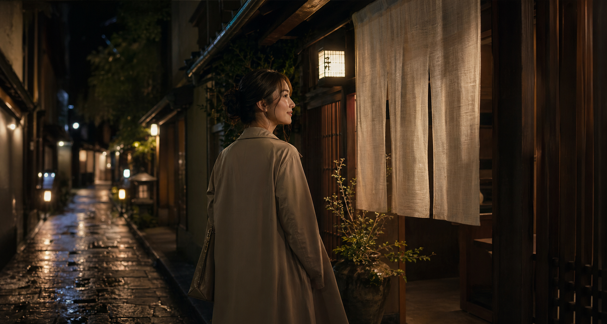
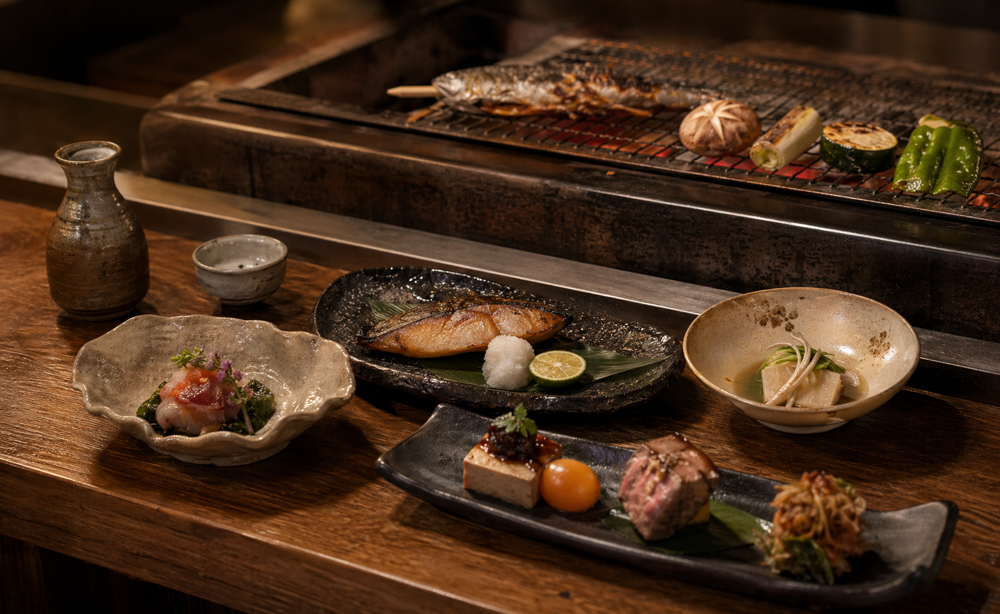

炭火串盛り
香ばしい焼き目と塩の余韻を楽しむ定番盛り合わせ。
¥1,680
Hidden Japanese dining
路地裏の静けさ、炭火の香り、季節の小皿。仕事帰りの一杯から大切な会食まで使いやすい、大人の居酒屋です。


Reason to choose
飲食店サイトは「おいしそう」だけでは足りません。席、価格帯、利用シーンを直感的に伝え、予約の不安をなくします。
香ばしい焼き物と季節の小鉢で、写真から食欲を引き出します。
カウンター、個室、宴会席を迷わず確認できる導線に。
歓送迎会や週末予約へつながる価格表示とCTAを配置します。
人数と時間をすぐ相談。
デート、接待、宴会に対応。
飲み放題や料理内容を調整。
迷わないアクセス表示で安心。
写真、価格、席の雰囲気を整えるだけで「この店にしよう」が早くなる。
宴会・会食・一人飲みの入口を分けて訴求。
お店の物語と信頼感をWEBで補強します。